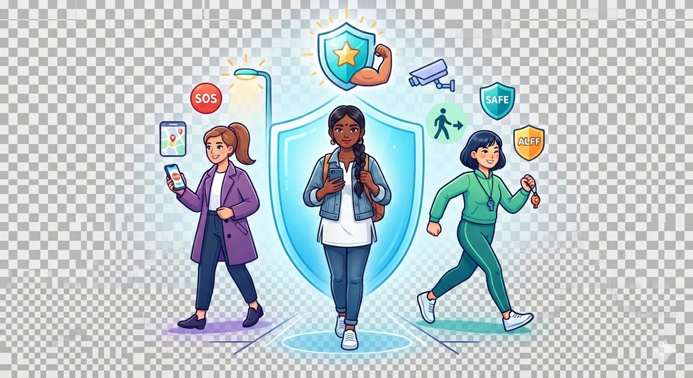

Women Safety Walk Companion helps you travel safely with live location sharing, SOS alerts, trusted contacts, and safe route guidance.
Get Started
Share your live location with trusted contacts.
Send emergency alerts instantly.
Navigate through safer routes.
Quickly notify your emergency contacts.
Create your account and add trusted contacts.
Share your live location with trusted people.
Use SOS alerts and safe route guidance whenever needed.
In case of danger, press the SOS button to instantly notify your trusted contacts and share your live location.
Women Safety Walk Companion is a web application designed to help women travel safely. It provides emergency assistance through SOS alerts, live location sharing, trusted contacts, and safe route guidance, making travel more secure and reliable.